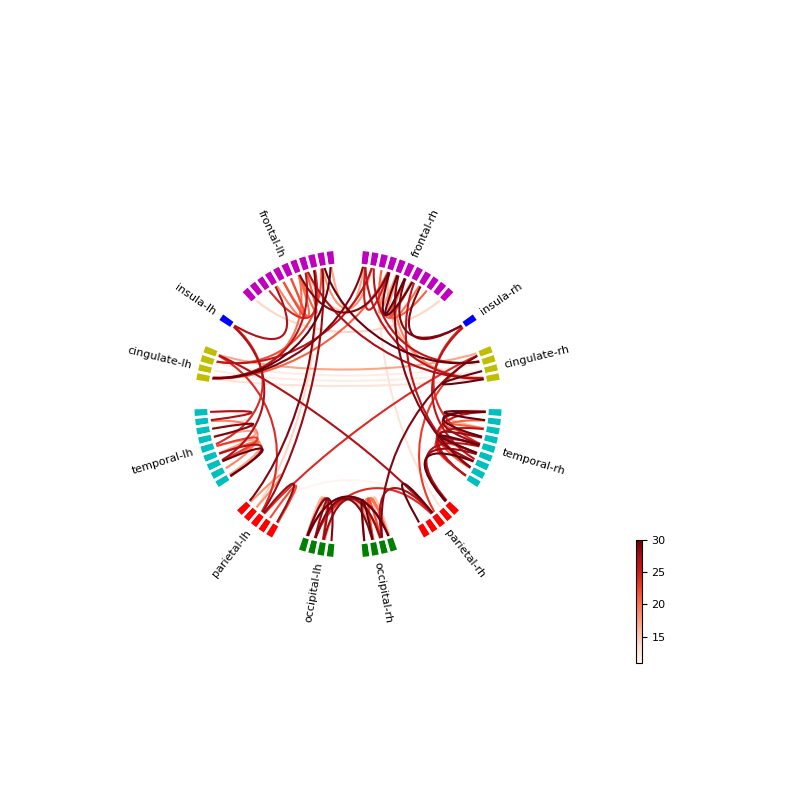
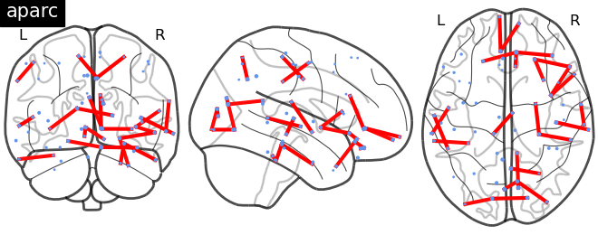

Note
Go to the end to download the full example code
Plot label distances¶
Script to plot label distances on circle and connectome plots.
- 
- 
Reading labels from parcellation...
read 34 labels from /Users/praveen.sripad/nanna_data/mne_data/MNE-sample-data/subjects/sample/label/lh.aparc.annot
read 34 labels from /Users/praveen.sripad/nanna_data/mne_data/MNE-sample-data/subjects/sample/label/rh.aparc.annot
import os.path as op
import mne
from mne.datasets import sample
from mne_connectivity import degree
from jumeg import get_jumeg_path
from jumeg.connectivity import (get_label_distances,
plot_grouped_connectivity_circle)
import yaml
from nilearn import plotting
data_path = sample.data_path()
subjects_dir = op.join(data_path, 'subjects')
subject = 'sample'
parc = 'aparc'
yaml_cortex_fname = op.join(get_jumeg_path(), 'data/desikan_%s_cortex_based_grouping.yaml' % parc)
labels_fname = op.join(get_jumeg_path(), 'data/desikan_label_names.yaml')
with open(labels_fname, 'r') as f:
label_names = yaml.safe_load(f)['label_names']
replacer_dict_fname = op.join(get_jumeg_path(), 'data/replacer_dictionaries.yaml')
with open(replacer_dict_fname, 'r') as f:
replacer_dict = yaml.safe_load(f)['replacer_dict_%s' % parc]
# compute distances between center of masses (COMs) of the labels
# we also get the MNI coordinates of the COMs in millimetres
con, coords, _, _ = get_label_distances(subject, subjects_dir, parc=parc)
# forget long range connections, plot short neighbouring connections
neighbor_range = 30. # millimetres
con[con > neighbor_range] = 0.
cortex_colors = ['m', 'b', 'y', 'c', 'r', 'g',
'g', 'r', 'c', 'y', 'b', 'm']
out_fname = 'fig_label_com_distances_circle_%0.1f_%s.png' % (neighbor_range, parc)
plot_grouped_connectivity_circle(yaml_cortex_fname, con, label_names,
replacer_dict=replacer_dict,
yaml_color_fname=None, labels_mode='replace',
cortex_colors=cortex_colors,
out_fname=out_fname, colorbar_pos=(0.1, 0.1),
n_lines=None, colorbar=True,
colormap='Reds')
# compute the degree
degs = degree(con, threshold_prop=1)
# show the label ROIs and short range connections using nilearn glass brain
fig = plotting.plot_connectome(con, coords, node_size=degs,
edge_threshold='99%',
node_color='cornflowerblue',
display_mode='ortho',
title='%s' % parc)
fig.savefig('fig_%s_labels_distance_degrees.png' % parc)
Total running time of the script: ( 0 minutes 1.887 seconds)